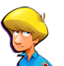
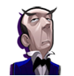
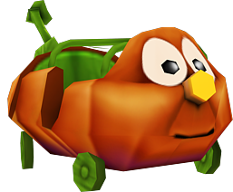
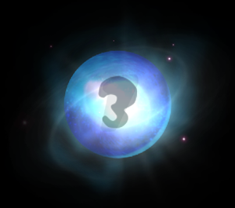

11 |
Regole di base e informazioni |
 |
Regole di base All’inizio del proprio turno i giocatori colpiscono la palla di cristallo e il risultato determina il numero di caselle di cui dovranno avanzare. Mentre la macchina avanza lungo il tabellone, i giocatori possono raccogliere le monete e le gemme sparse lungo il percorso muovendoci sopra il cursore. Se la macchina si ferma su una casella bonus o una casella penalità, ogni giocatore riceverà o perderà il numero di monete indicato. Quando i giocatori comprano una pergamena magica o quando inseriscono una parola segreta sbagliata, la penalità verrà suddivisa equamente tra tutti. Ogni giocatore riceve invece un montante di monete diverso in base alla sua prestazione nei mini giochi e nelle sfide o a seconda del denaro raccolto mentre la macchina si muove lungo il percorso. Se la macchina subisce troppi danni e i giocatori non hanno le 500 monete necessarie per le riparazioni, la partita finirà. Quando i giocatori indovinano la parola segreta, si impossesseranno del tesoro di famiglia di Fazzy prima di darsi battaglia nell’ultimo mini gioco (“Corsa finale”) per decidere il piazzamento finale basandosi sul punteggio totale. Alla fine del gioco i giocatori riceveranno un trofeo e un titolo: ad esempio chi ottiene il punteggio più alto sarà nominato “Padrone del castello”. Se invece i giocatori inseriscono la parola segreta sbagliata, subiranno una penalità di 200 monete (suddivise tra i giocatori in base al denaro accumulato fino a quel momento), ma potranno continuare a giocare; se perdono tutte le monete, perderanno la partita. Dopo avere raccolto i 5 indizi, i giocatori possono scegliere se inserire la parola segreta o resettare l’indovinello e continuare a giocare. Se invece gli indizi raccolti sono solo 4 o meno, i giocatori avranno a disposizione 3 scelte: provare a inserire la parola segreta, resettare l’indovinello e continuare a giocare o tornare al gioco senza resettare. Nota: resettare l’indovinello costa 200 monete e se i giocatori non hanno abbastanza denaro, avranno solamente due opzioni: continuare a giocare o provare a risolvere l’indovinello. Informazioni di base  Puoi scegliere uno dei seguenti personaggi: un ragazzo, una ragazza, un maggiordomo o un vecchietto.
Fazzy è un amico che darà un sacco di buoni consigli e venderà gli indizi ai giocatori.  I quattro personaggi si muovono sul tabellone a bordo della Zucca-mobile di Fazzy che può essere danneggiata dai fantasmi nella sfida “Fantasma”. Se la macchina subisce così tanti danni da essere distrutta, i giocatori dovranno pagare 500 monete per ripararla o perderanno la partita. Se la macchina è solo danneggiata, i giocatori potranno ripararla passando sopra la casella “Ripara”. Se vuoi controllare i punti energia della macchina, muovi il cursore sopra la Zucca-mobile quando è il tuo turno di gioco.
Le pergamene magiche forniscono degli indizi utili per indovinare la parola magica e avere così accesso alla stanza del tesoro.
Il Fantasma Maghetto lancia un incantesimo sui personaggi rendendoli piccolissimi e dandogli così accesso ad aree speciali. Quando i personaggi escono da una delle aree speciali, il Fantasma Maghetto lancia un contro-incantesimo riportando i personaggi alla loro grandezza naturale. Questo fantasma buono appare solo all’entrata di alcune aree speciali.  L’icona della palla di cristallo ti dirà di quante caselle avanzerà la Zucca-mobile sul tabellone. Le icone per le informazioni di base sui personaggi si trovano agli angoli dello schermo. Qui puoi avere le informazioni sui singoli giocatori e sulle monete che ognuno ha raccolto. |


 |
 |
 |